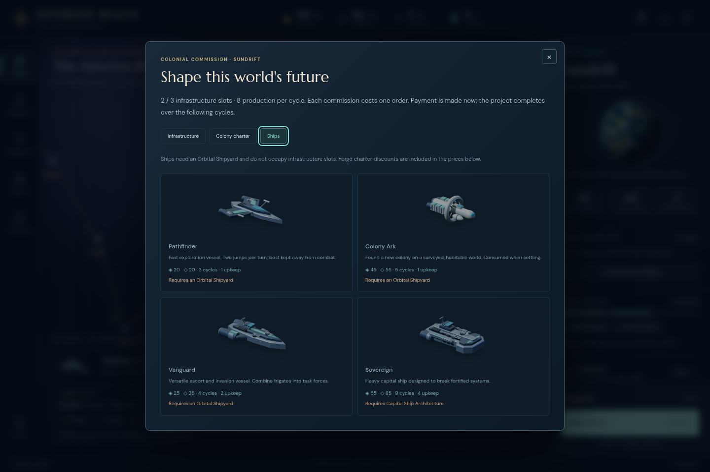
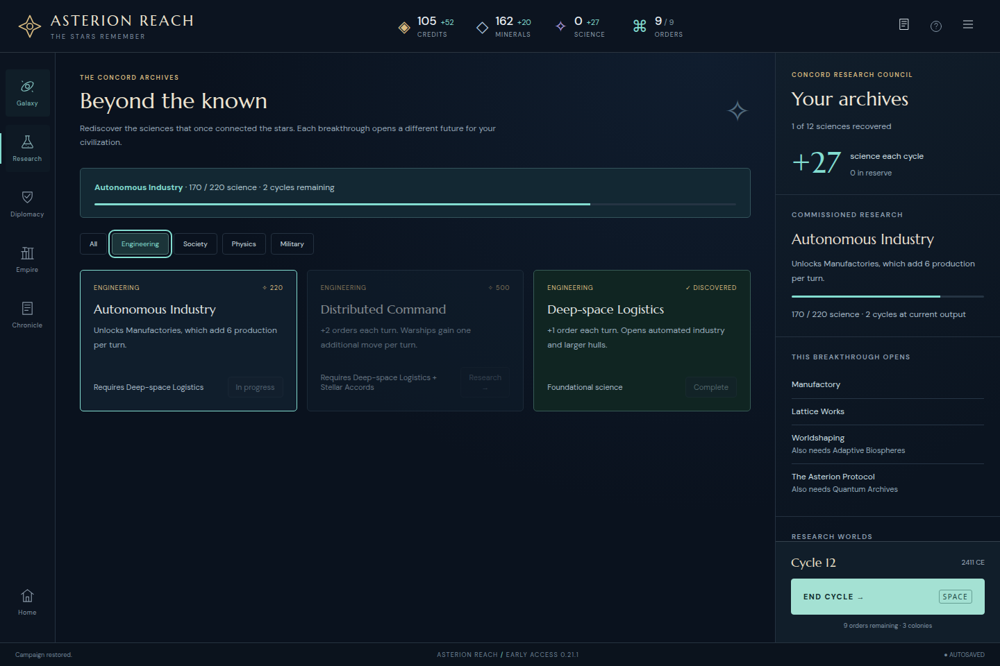
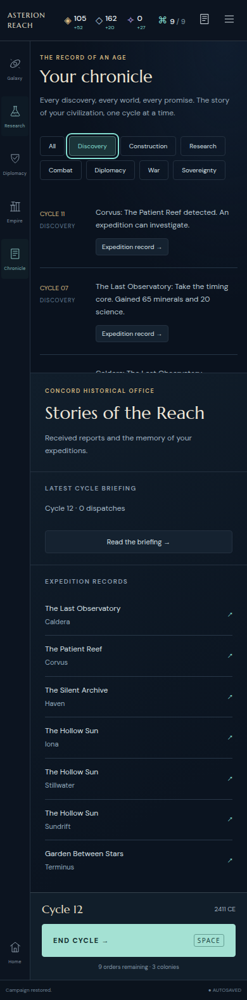
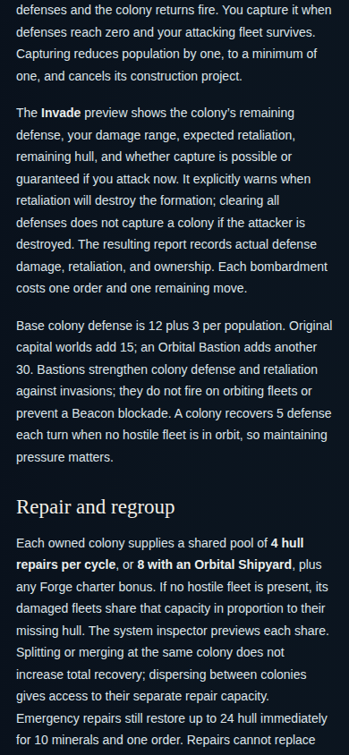

ASTERION REACH · INDEPENDENT0.21.1 ACCEPTANCE
Keep keyboard focus on the selected control
Pass. Construction tabs and Research/Chronicle filters retain focus after their content changes. Enter, Space, forwardTab and active-state semantics work at1440×960 and390×844. No further defect found in this bounded correction review.
This is a separate post-play acceptance of immutable http://127.0.0.1:5215, built at2026-10-29T03:07:29.898Z. It imports an unmodified actual cycle12 UI export from the earlier normal-seed opening. It is not a continuation of that campaign and does not relabel its original0.21.0 screenshots as testing0.21.1. Every file and the manifest in the original opening bundle were rehashed unchanged.
Independent checks
Construction begins at the normal Close focus. Tab reachesInfrastructure; Enter retains its replacement. ForwardTab reachesColony charter; Space retains its replacement. ForwardTab reachesShips; Enter retains its replacement. All three construction tabs are also activated with the other key. The disabled ship projects at this actualSundrift colony are skipped as expected, so Tab afterShips wraps toClose rather than reaching a disabled project. Escape restores the original commission launcher.
The original Research reproduction now retainsEngineering afterEnter; forwardTab reachesSociety and Space retainsSociety. Exactly one category has aria-pressed="true" and the visible research cards match it. Chronicle retainsDiscovery afterSpace; forwardTab reachesConstruction and Enter retainsConstruction. Exactly one filter is pressed and the rendered entries match it.
Every tested activation preserves a visible keyboard focus ring. The full imported state—including treasury, research, queues, history and RNG—is exactly unchanged after all checks at each width. No game or guide page exception occurred, and monitored game resource responses had no failures. The actual input is unchanged and separately attributed.

Corrected desktop construction activation using the actual cycle12Sundrift colony.
The active Research category retains focus and exposes its selected state.
Narrow Chronicle activation; the followingTab proceeds toConstruction.Guide clarification
The corrected guide explicitly states that Bastions strengthen colony defense and invasion retaliation but do not fire on orbiting fleets or prevent a Beacon blockade. The paragraph is fully visible and wraps without horizontal overflow at both tested widths. The keyboard-only Skip link and combat-section link reach their intended content. This factual clarification does not claim the peaceful opening encountered a blockade or demonstrated a player misunderstanding.

The changed paragraph remains readable at390pixels.Scope and reproducibility
The reviewed source difference is limited to src/main.js and the guide. The handlers restore the newly rendered active control’s focus; Research and Chronicle controls gain pressed-state attributes. No engine module or content definition differs from base3c6e822 in this correction. No paid command or End Cycle is executed by this follow-up. Broader rules and browser suites are outside this independent check.
Independent runner · Complete results · Summary · Reviewed source diff · Frozen source and production hashes · Unmodified actual input · Artifact hashes
node /tmp/asterion-stage23-keyboard-independent/review.cjs
The runner uses separate browser contexts for each width and the immutable5215server. It writes only this follow-up folder. Original opening evidence remains frozen under /tmp/asterion-stage21-novice-audit.